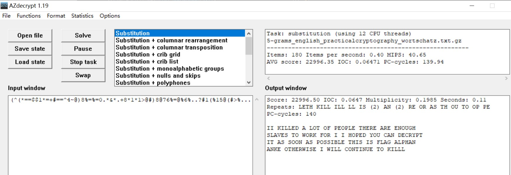
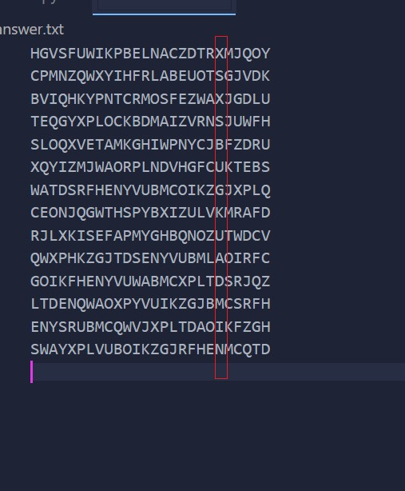
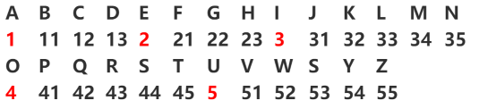
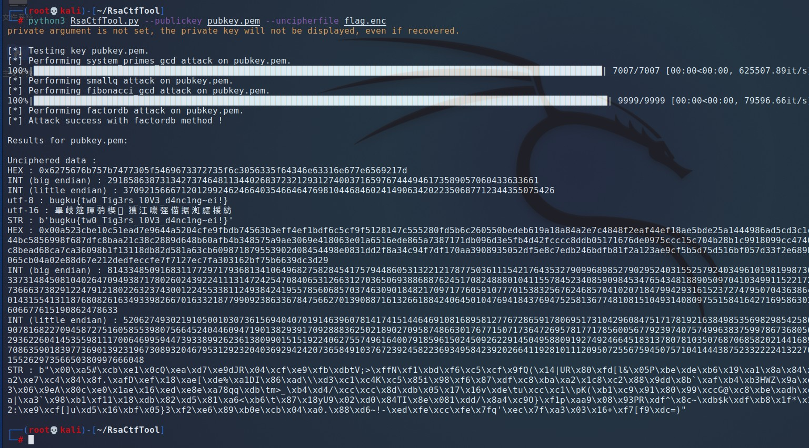

- affine
- rsa
- 黄道十二宫
- 托马斯.杰斐逊
- 简单的rsa
- 缝合加密
- python_jail
- 这是个盲兔子,竟然在唱歌!
- Math&English
- 7+1+0
- 给你私钥吧
- 11月11日是个好日子
- 道友不来算一算凶吉？
- Double
- python(N1CTF)
- Funny Number
affine
了解仿射密码的原理即可做
1 | y = 17x-8 flag{szzyfimhyzd} |
1 | 仿射密码是一种替换密码，利用加密函数一个字母对一个字母的加密。 |
1 | # 爆破的方法 |
1 | # 求逆方法 |
rsa
方法一：
1 | python3 RsaCtfTool.py -n 460657813884289609896372056585544172485318117026246263899744329237492701820627219556007788200590119136173895989001382151536006853823326382892363143604314518686388786002989248800814861248595075326277099645338694977097459168530898776007293695728101976069423971696524237755227187061418202849911479124793990722597 -e 354611102441307572056572181827925899198345350228753730931089393275463916544456626894245415096107834465778409532373187125318554614722599301791528916212839368121066035541008808261534500586023652767712271625785204280964688004680328300124849680477105302519377370092578107827116821391826210972320377614967547827619 --uncipher 38230991316229399651823567590692301060044620412191737764632384680546256228451518238842965221394711848337832459443844446889468362154188214840736744657885858943810177675871991111466653158257191139605699916347308294995664530280816850482740530602254559123759121106338359220242637775919026933563326069449424391192 |
方法二：
先用wiener攻击的脚本求出d
1 | import RSAwienerHacker,hashlib |
在用c，d，n求出m
1 | import binascii |
黄道十二宫
开局一张图，典型的十二宫，杀手密码
把图中按行列写出来
原理参考
1 | % . . @ * > @ ? = = % 8 8 % 5 |
处理之后用脚本，转换排列，参考完要改不然结果是错的。因为行列之间的关系
脚本参考或或师傅
1 | en_s="%..@*>@?==%88%5.@%#@@90–7$^=*@17.(>()1@##-$40~.*6?#%#8#=75+1(*@*1%#>.0@5)%?%*^=)&>=1%.+7⇩(+8*@@(.@@@#*=#$3*#%.#%%.3.*+7.7+@===+)61" |
在扔AZdecrypt里直接solve

托马斯.杰斐逊
原理可以参考：https://blog.csdn.net/pdsu161530247/article/details/73604729
1 | 1： <ZWAXJGDLUBVIQHKYPNTCRMOSFE < |
先通过密钥找到行数，然后在找到的行数用密文中的第一个字符H来找，找到他的位置到最后，然后提出，把他拉到前面
1 | KPBELNACZDTRXMJQOYHGVSFUWI-->KPBELNACZDTRXMJQOY-->GVSFUWIKPBELNACZDTRXMJQOY |
拿脚本直接处理
1 | f=open("file.txt","r") |
最后在倒数第六列找到flag

简单的rsa
可以在线pyc
或者就uncompyle6
p、q、e、c都给齐了直接写脚本就出
1 | import gmpy2,base64 |
缝合加密
1 | 猜猜怎么圈下num(e)只Pig? |
e在字母表里是第5位，就代表里面关了5只猪，在文本中关一只猪需要8个栅栏，两只猪需要10个栅栏。那5只猪就是16个栅栏了。解出来就是Wt15IR44KAJ5DTs182JdFkJGRPOuYACcJrGQvYQ2wJWNKQ0zykD1FKOVT0KEu1RBtjugYCqKnOoh5lSTUZeBX0JLh0UAGRMFzpDxPmlvR9KZQueSsUdmGltGhAXPTK1N
在看钥匙1，确实是键盘，但比划出来发现不是什么字母。看了wp发现是猪圈密码。对照着转出来去google发现跟维吉尼亚有关giovanbattistabellaso
再去维吉尼亚解密QWVzIGlzIFUyRnNkR1ZrWDEvbjZHSSs5b0J0OW41UCtEbldDOStGTDQ4NzZwcXZJdVVLbHpYWFJ5QSs1aHlZQjNUYzFlV28KS1JqM0hJQ2dQOVRhbU5EVFFsZ1Vwdz09
解出来在base64Aes is U2FsdGVkX1/n6GI+9oBt9n5P+DnWC9+FL4876pqvIuUKlzXXRyA+5hyYB3Tc1eWo KRj3HICgP9TamNDTQlgUpw==
然后在emoji解密（base100）得到key在aes解密
python_jail
jail=监狱
一题python的逃逸题，理应扔misc
应该有什么限制。
用help(flag)来绕过
1 | >>> flag="asdsad12312" |
这是个盲兔子,竟然在唱歌!
U2Fsd开头的不一定是aes
1 | ⡥⠂⡶⡃⡔⡷⡦⡛⡨⠁⠟⡚⠉⠇⡳⡜⡉⡤⡴⡑⡓⡆⡑⡔⡆⡠⡩⡹⠂⡢⡪⡵⡢⡟⡶⡹⠃⡒⠁⡥⡞⠟⡚⡞⡣⡣⡤⡀⡡⡆⠉⡼⡻⠀⠉⡧⡙⠇⡦⡇⡧⡅⡺⡑⠺⡑⡉⡑⠂⡞⡱⡳⠁⡊⡢⡩⡊⡚⡊⡕⡛⠀⡕⠂⡩⡱⡾⡴⠂⡶⡛⠈⡹⡇⡗⡑⠃⠁⡆⡝⡽⡺⡨⡙⠛⠅⠁⡠⡇⡩⡅⡸⡑⡧⡑⡸⠅⡆⡨⠛⡣⡨⡑⡢⡝⠁⡟⡚⡿⠺⠛⡿⡕⡴⡛⡡⠀⡔⠉⠂⡴⡃⠃⠀⡿⡹⠄⡺⡀⡵⡊⡝⡪⡨⡛⡦⡖⡛⡧⡡⡪⠈⡲⠟⡝⡔⡕⠅⡄⡞⠟⠂⡵⡉⠅⡩⡦⡼⡈⡴⡩⡈⠟⡞⡦⡩⡆⡛⡴⡾⡈⡁⡁⡗⠺⡹⡾⡆⡢⡹⡠⡈⡃⡛⠆⡁⡖⡻⡉⡡⡻⡓⠆⡁⡼⡷⠃⡛⠅⡵⠈⡝⡂⠉⡃⡄⡠⡠⡡⡒⡁⡃⡁⠅⡾⡨⠆⡘⠇⡄⡁⡲⠅⡖⠛⡓⡤⡃⡕⡺⡃⡝⡛⡳⠀⡢⡒⡙⠂⠺⡱⡉⡻⡒⡨⡄⡒⡒⡈⡱⡧⡽⠆⡉⡷⡹⠛⡊⠟⡥⡜⡳⡶⠆⡺⠉⠂⡂⡛⡥⡓⡝⡴⠆⡽⡟⠅⡿⡻⡸⡺⠆⡇⠂⠈⡼⡤⡕⠂⠈⡤⠅⠛⠁⡇⡟⡧⡈⡗⡲⡊⡸⠉⡻⠺⡱⡻⡥⠍= |
Math&English
把每行计算出来，去转元音字母21 33 1 22 3 44 54 5 1 35 54 3 35 41 52 13

bugku{yuanyinpwd}
7+1+0
起手是给了一串字符串4nXna/V7t2LpdLI44mn0fQ==
base64解密后有的位比较奇怪，我就把第1位和第三位拿去转unicode，并与bugku的格式对比。发现相差128。写脚本处理
unicode
1 | âuçkõ{·bét²8âiô} |
1 | import base64 |
bugku{7bit28bit}
给你私钥吧
python3 RsaCtfTool.py --publickey pubkey.pem --uncipherfile flag.enc

还有一种是factordb解n。数太大，只能去在线找
1 | openssl rsa -pubin -in pubkey.pem -text -modulus |
然后解出来用脚本写回去
PKCS1_OAEP是一种基于RSA和OAEP加密算法。所以就要用PKCS1_OAEP写回去
脚本参考
1 | from Crypto.PublicKey import RSA |
11月11日是个好日子
base套娃+affine爆破题
1 | base58->base16->base32->base64 |
hint是阴阳怪气编码先套娃，alp只在最后一步用，注意数字哦
36位的仿射，这里 我其实不知道为什么是仿射，看了wp才知道
脚本所用原理就是，求了
1-36位里的所有质数的逆元，然后b就是1-36。然后代进去算，匹配开头是flag的形式
1 | from itertools import permutations |
道友不来算一算凶吉？
encrypt4就是简单加减计算，encrypt5就是仿射的加密
先把密文转成易经中对应的8个二进制，然后二进制8位分割转成字符串。然后在逆encrypt4，在逆encrypt5
1 | #coding:utf-8 |
Double
1 | import gmpy2 |
python(N1CTF)
未清楚原理，还是不太好写=。=
参考链接-1
N1CTF{F3istel_n3tw0rk_c4n_b3_ea5i1y_s0lv3d_/--/}
Funny Number
数论题。我也爬了。
1 | from gmpy2 import invert |